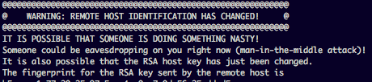

Captains Log 0005
May 19, 2025
SSH Keygens
As per wikipidea "The Secure Shell Protocol is a cryptographic network protocol for operating network services securely over an unsecured network"
I've been using SSH a lot to remote into my raspberry pis rather than hook them up to any sort of display and somewhere along the way I ended up putting a different OS on one and changed the username and password. So when I went to SSH in I got some interesting warnings about it. Idk something about the way it's worded and the use of @ as border I thought was kinda fun/funny.

It is possible someone is doing something nasty lol
Anyways its easy to fix you just type out the SSH key and add it to the folder in
C:/Users/"username"/.ssh/known_hosts.txt"
That is assuming it's not actually a "Man in the middle" attack lol otherwise I think your just ignoring it pretty much and letting it happen.
I also really like when you go to create a new key/use the keygen it prints out a little picture so you can easily visually verify your keys because keys are a long as hell string of random alphanumerals
it's tough to tell at a glance.

Anyways I just feel a bit nostalgic with it, it kinda reminds me of using keygens for pirated games back in the day.
I also think it's pretty neat how SSH is used so much still and it was created in 1995. 30 year protocol running strong to this day :)